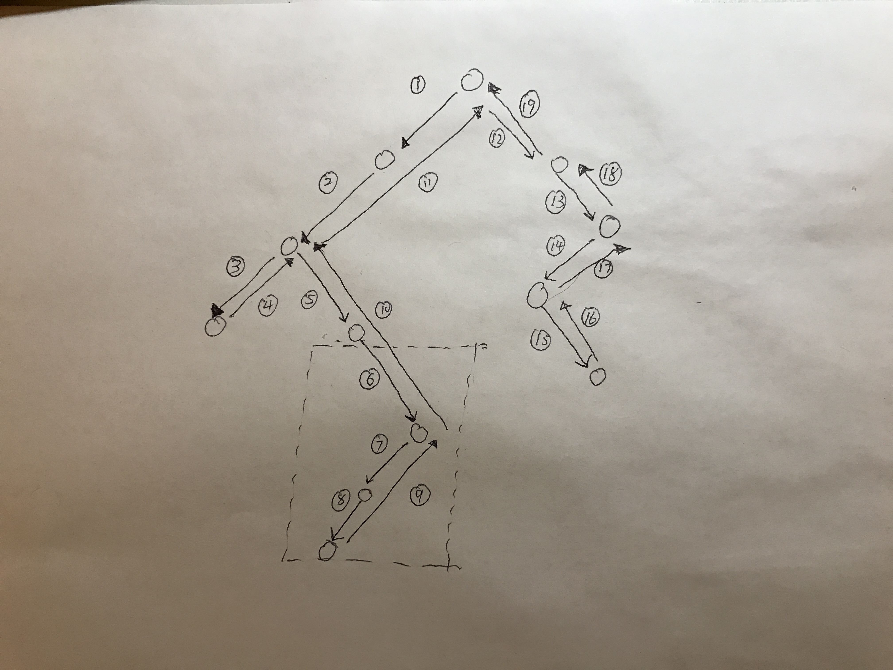

二分树分治理解：
1. 每个节点，如果有左子树，则往左子树走，如果没有则往右子树走，走到最下面一层，没有左子树也没有右子树，然后就往上回溯，重复这个过程。
2. 可以抽象理解成首先走到左子树最低层，从左往右，先下后上回溯到顶点。在走到右子树的最底层，从左往右，先下后上回溯到顶点。
3. 在抽象可以理解成从下往上走。
分治模板
int helper(TreeNode root){
if ( root == null )
// 结束条件
int left = helper(root.left);
int right = helper(root.right);
此时到达最下面的结点了，然后开始处理
//conquer
}
例子题目
- Binary tree longest consecutive sequence Q
- sub Tree With Maxium average(
- Binary Tree Maximum PathSum(经典) Q

4byte * 32000 = 128kb.开始没有理解是什么意思，他的意思是范围是0-32000,没有重复， 最坏的可能性里面有32000个数。
Q:Sort complexity?
A:O nlgn, merge sort, 要求更快到O(n)
hint: 你知道了整数的范围：
A: booloean[] arr = new boolean[32000];
scan once set the boolean. scan another time ,check true and print it out to new file.
Time complexity O(n),
I: good, ok with time complexity O(n), how much memory do you need？
1byte * 32000 = 32000byte. can you use less than that?
me: priority queue,
I: time O(nlgn)
me: B+ tree
I: time still O(nlgn).
I: can you use less memory other than boolean array.
me: I got it, using bit vector,
that way, 1 byte has 8 bits, we can use 4000byte to represent. use byte index + offset to represent a number,
if there exists a number, set it to 1, otherwise, set it to 0.
I: good can you write code?
// set array
int temp = 1;
temp = temp<